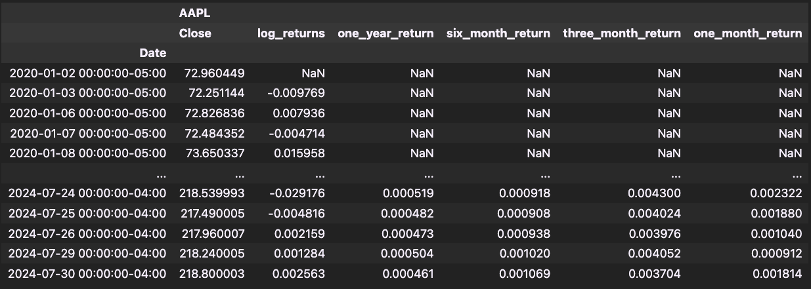
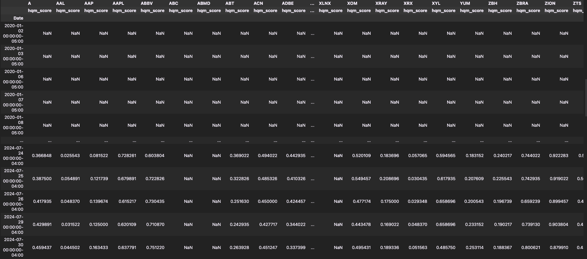
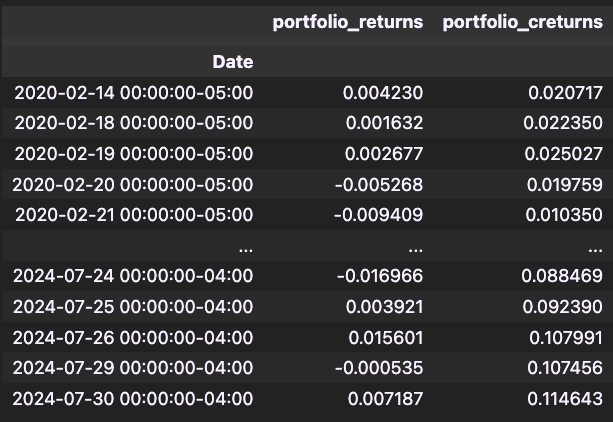
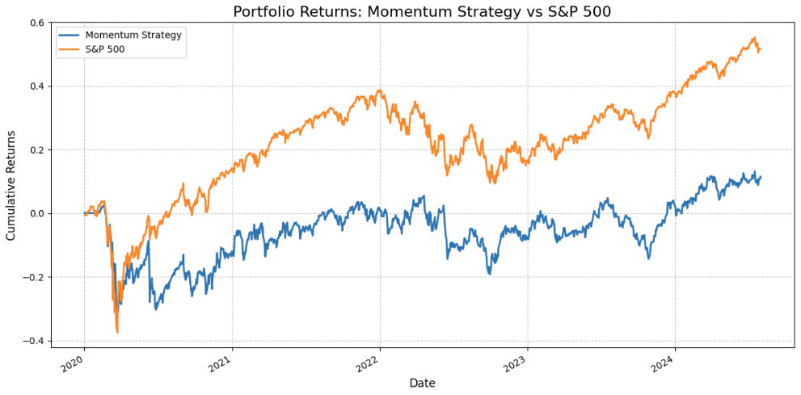

Portfolio Construction Based on Momentum
Overview
This project presents a comprehensive momentum-based trading strategy designed for the construction and management of an investment portfolio comprising S&P 500 stocks. By analyzing returns over various timeframes, calculating High Quality Momentum (HQM) scores, and selecting the top 50 stocks, the strategy underscores the effectiveness of a multi-timeframe momentum approach in enhancing portfolio performance.
Here is the link to the code.
Data Foundation
The strategy leverages daily stock data for S&P 500 companies spanning from 2020 to 2024. It involves calculating logarithmic returns for each stock across multiple timeframes: one month, three months, six months, and one year. This multi-timeframe analysis ensures a robust assessment of stock momentum.
High Quality Momentum (HQM) score
Returns are used to calculate percentile ranks for each timeframe, and the average of these percentiles is computed to derive the High Quality Momentum (HQM) score. The HQM score is a composite measure that identifies stocks exhibiting strong momentum across different periods, making it a crucial metric for portfolio construction.
Portfolio Construction and Returns
An equal-weighted portfolio is constructed using the top 50 stocks based on their HQM scores. The performance of this portfolio is continuously tracked and analyzed to evaluate its effectiveness. Although the strategy underperforms the S&P 500 benchmark, it serves as a proof of concept demonstrating the potential of multi-timeframe momentum in portfolio construction.
Performance Visualization
The strategy's performance is illustrated through a comparative chart that contrasts the momentum-based portfolio with the S&P 500 index. This visualization highlights the theoretical advantages and practical insights of incorporating a multi-timeframe momentum approach in portfolio construction.
Key Skills
Python, Data Handling with pandas, Algorithmic Trading Strategy Development, Data Visualization, Performance Analysis, Risk Management, Financial Data Analysis, Technical Analysis